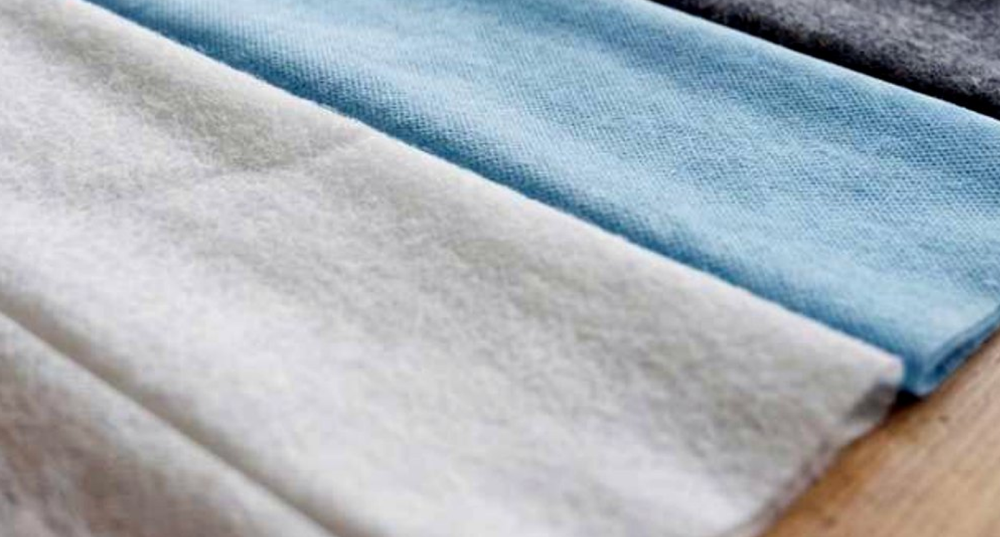
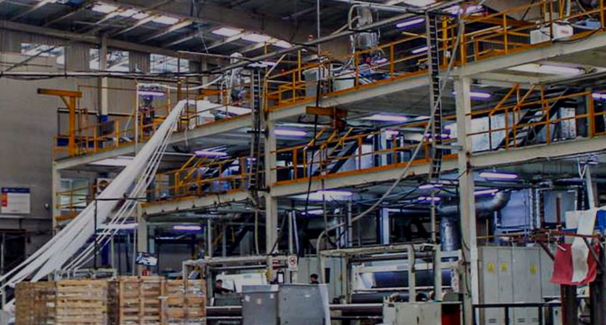

0 g/m²
Rango de gramaje configurable según aplicación técnica.
Tela no tejida spunbond para colchones con gramaje estable, corte a medida y especificación repetible para procesos que no pueden detenerse por variaciones de material.
Cotización por gramaje, ancho, corte, volumen y aplicación. No es venta retail.


La cotización se construye por especificación, aplicación y volumen.
Valida gramaje, ancho y corte antes de tu siguiente corrida para reducir merma y micro-paros.
Controla gramaje, ancho y corte desde la cotización para reducir merma, micro-paros y retrabajo en producción.
Si tu línea colchonera depende del ancho, corte y gramaje del material, cotiza spunbond configurado para entrar mejor a tu proceso.
Rango de gramaje configurable según aplicación técnica.
Ancho máximo configurable para procesos industriales.
Producción desde metrajes industriales sujetos a configuración.
Respuesta comercial para iniciar valoración y cotización.
El “casi queda” no siempre se reporta como problema de material, pero consume tiempo de línea.
Si la resistencia varía entre corridas, calidad termina reaccionando en lugar de prevenir.
Cuando el ancho no está alineado a tu proceso, aparece recorte interno y desperdicio.
Comprar de emergencia sube el riesgo de aceptar materiales que no son ideales para tu producto.
Para cotizarte bien, primero necesitamos entender tu línea: uso dentro del colchón, gramaje, ancho, corte y consumo mensual.
Con estos datos podemos revisar compatibilidad técnica y darte una ruta de suministro más clara.
Material consistente para interiores, tapas falsas, resortes o aplicaciones técnicas donde la variación se nota en calidad.
Anchos y cortes configurados para alimentar procesos con menos ajustes internos.
Tela no tejida diseñada para producción industrial y aplicaciones técnicas.
Define gramaje, ancho, acabado, volumen y uso antes de comprar.
Menos dependencia de soluciones genéricas cuando tu producción requiere continuidad.
Ruta de compra pensada para empresas con consumo industrial constante.
Cada aplicación dentro del colchón puede requerir gramaje, ancho, corte o acabado diferente. Por eso filtramos tu caso antes de cotizar.
Material configurado para cubrir funciones internas sin sobredimensionar costo.
Spunbond adaptado a la función de separación o protección dentro del producto.
Gramaje y acabado según necesidad mecánica y percepción de calidad.
Corte validado para procesos específicos, sujeto a especificación técnica.
Queremos validar si podemos fabricar el rollo correcto para tu proceso, antes de que tu línea tenga que adaptarse al material.
Recibimos uso, gramaje, ancho, color, acabado, volumen y fecha objetivo.
El equipo valida factibilidad, ruta de suministro y variables críticas del proyecto.
Cuando aplica, se revisa muestra física, Pantone o ficha para reducir riesgo.
Se define corrida, medidas y condiciones según especificación y volumen.
Se planea continuidad para que compras y producción tengan menos improvisación.
Compártenos gramaje, ancho, uso y consumo estimado. Te ayudamos a validar si Debytex puede fabricarlo para tu producción.
Sí, sujeto a especificación, ancho requerido y validación técnica.
La recomendación es revisar aplicación, ficha técnica y, cuando aplique, una muestra o corrida de validación.
Sí. Esta propuesta está pensada para empresas con consumo industrial y necesidades de suministro constante.
Sí. Debytex trabaja con anchos configurables desde 1 cm hasta 3.2 m.
Se cotiza por especificación, volumen, gramaje, ancho y frecuencia de compra.
Sí. El formulario ayuda a iniciar la valoración técnica y detectar qué información falta.